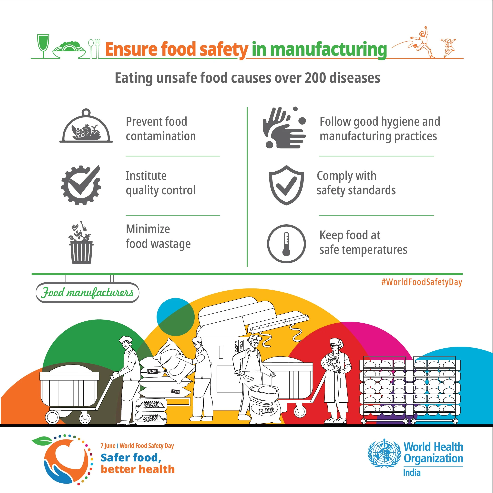
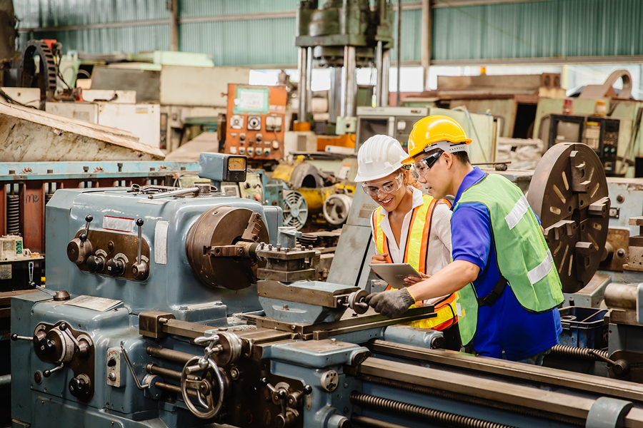
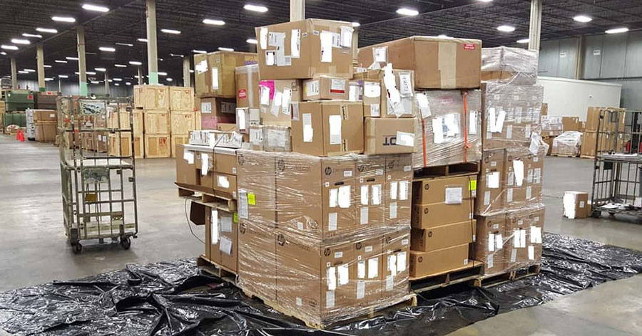

Quality & Compliance
Built into every process, not added later
Why RRYVS?
Quality First
At RRYVS, quality is the foundation of every decision we make. From sourcing raw materials to final dispatch, each stage is monitored to ensure consistency, safety, and compliance.
Transparent Trade
We believe trust begins with transparency. Our trade practices are built on clear communication, honest pricing, and realistic delivery commitments.
Built for the Long Term
RRYVS is focused on sustainable growth. Rather than short-term gains, we prioritize long-term partnerships, continuous improvement, and responsible business practices.
Our Quality Philosophy
Quality at RRYVS is not limited to final inspection. It is a continuous process that starts at procurement and continues through processing, packaging, storage, and logistics.
Every operation is designed to reduce risk, maintain hygiene, and ensure products meet the expectations of both domestic and international customers.
Our Quality Commitment

Hygienic Processing
Production environments are maintained with strict hygiene protocols to prevent contamination and ensure product safety.

Continuous Monitoring
Regular quality checks and monitoring systems help us maintain consistency and address issues proactively.

Export Compliance
Packaging, labeling, and documentation processes are aligned with applicable domestic and export regulations.
Assurance to Our Partners
When you work with RRYVS, you are partnering with a company that values responsibility, reliability, and consistency.
Our quality systems are designed to support long-term supply relationships and adapt to evolving market and regulatory requirements.